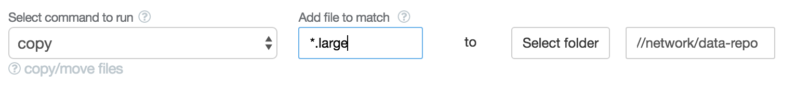
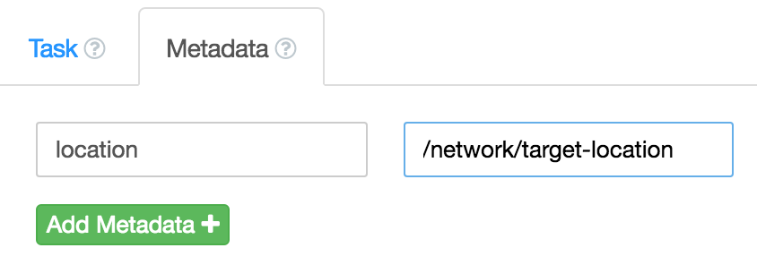
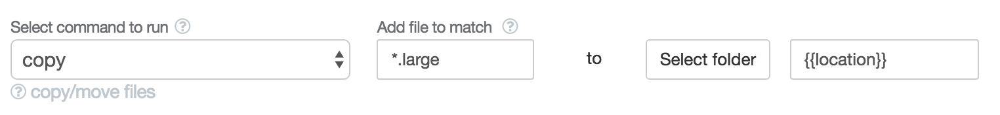
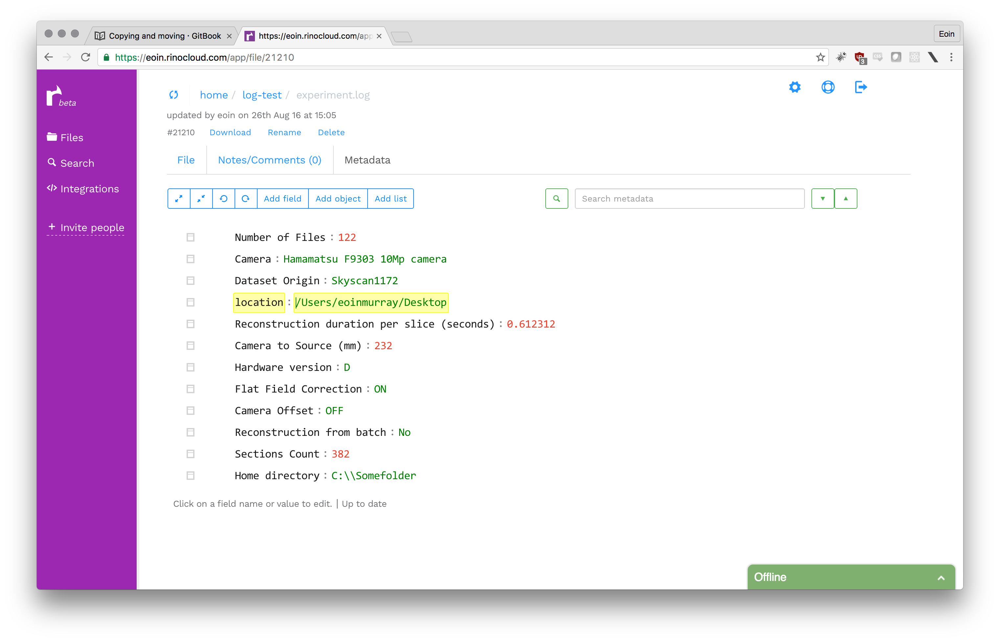

Copying and moving

Copying/moving data is easy, just input the files match for the files you want to copy; and select a destination folder and the files will be copied automatically. Moving is exactly the same.
This is very useful when copying files to a network location, for example. Since files get copied when they are created; you wont have to do a bulk copy yourself later.
If you want to save the target location of the copied files in the metadata of others files; its easy.
Example, copying large files, and saving location in metadata.
Imagine an experiment that creates many large images, saved as .tiff files
with are about 200mb each, and the experiment can make 100-200 images per run.
During the course of the experiment a .log file is created which contains a
lot of metadata and parameters of the experiment.
We don't want to save the large .tiff files to Rinocloud, since there is too many of them and they are too large for typical data synchronisation; but we definitely want to save the metadata; for sharing and team discussion. What do we do?
Automatically copy the large files to an internal network drive, and upload the log files to Rinocloud with metadata attached, and by setting an extra metadata parameter in Rinobot we can make sure the copy target location is saved in metadata as well.
- We set the target location of the copy/move as metadata in Rinobot: seen in this image

- We can reference the metadata parameter in the copy task by inserting the copy location target as
{{location}}

- Rinobot will run, copy the files, and upload the log files containing metadata and it will contain the copy location
